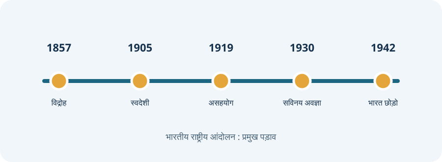

पाठ का उद्देश्य
राष्ट्रीय आंदोलन एक लंबी, विविध और बहुस्तरीय प्रक्रिया थी। इसमें किसान, आदिवासी, श्रमिक, विद्यार्थी, महिलाएँ, पत्रकार, क्रांतिकारी और राजनीतिक संगठन अलग-अलग रूपों में शामिल हुए। सभी आंदोलनों को केवल एक नेता या एक घटना से जोड़कर नहीं देखना चाहिए।
भारतीय स्वतंत्रता आंदोलन : प्रमुख समयरेखा

कारतूस विवाद तत्काल कारण बना, जबकि सैनिक असंतोष, आर्थिक शोषण, विलय नीति और सामाजिक-धार्मिक आशंकाएँ व्यापक पृष्ठभूमि थीं। विद्रोह दबा दिया गया, पर 1858 में कंपनी शासन समाप्त होकर शासन ब्रिटिश क्राउन के अधीन चला गया।
राष्ट्रीय स्तर पर राजनीतिक मांगों को उठाने का मंच बना। शुरुआती चरण में संवैधानिक सुधार, प्रशासन में भारतीय भागीदारी और आर्थिक शोषण के प्रश्न प्रमुख थे।
1905 में बंगाल विभाजन के विरोध में विदेशी वस्तुओं के बहिष्कार, स्वदेशी वस्तुओं के उपयोग, राष्ट्रीय शिक्षा और जनसभाओं को बढ़ावा मिला। 1911 में बंगाल विभाजन रद्द किया गया।
भारत के लिए स्वशासन की मांग को संगठित रूप दिया गया। 1916 का लखनऊ समझौता कांग्रेस और मुस्लिम लीग के बीच राजनीतिक सहयोग का महत्वपूर्ण पड़ाव था।
नील की खेती से जुड़े किसानों की समस्याओं के विरुद्ध गांधीजी का भारत में प्रमुख प्रारंभिक सत्याग्रह। इससे किसान प्रश्न राष्ट्रीय राजनीति में अधिक प्रमुख हुआ।
खेड़ा में फसल खराब होने पर लगान में राहत की मांग उठी। अहमदाबाद में मिल मजदूरों के वेतन संबंधी विवाद में सत्याग्रह और मध्यस्थता का प्रयोग हुआ।
रॉलेट एक्ट ने बिना मुकदमे हिरासत जैसी दमनकारी शक्तियाँ दीं। जलियाँवाला बाग हत्याकांड ने देशव्यापी आक्रोश पैदा किया और औपनिवेशिक शासन की वैधता पर गहरा प्रश्न उठाया।
सरकारी उपाधियों, शिक्षण संस्थानों, अदालतों और विदेशी वस्तुओं के बहिष्कार का आह्वान। फरवरी 1922 की चौरी-चौरा घटना के बाद गांधीजी ने आंदोलन स्थगित किया।
कमीशन में कोई भारतीय सदस्य नहीं था। “साइमन गो बैक” के नारे के साथ विरोध हुआ। लाहौर में प्रदर्शन के दौरान लाठीचार्ज में घायल लाला लाजपत राय की बाद में मृत्यु हुई।
दिसंबर 1929 में पूर्ण स्वराज का लक्ष्य घोषित हुआ। 12 मार्च 1930 को साबरमती से दांडी यात्रा शुरू हुई और 6 अप्रैल को नमक कानून तोड़ा गया। नमक सत्याग्रह सविनय अवज्ञा आंदोलन का प्रमुख आरंभिक प्रतीक बना।
8 अगस्त 1942 को बंबई में अखिल भारतीय कांग्रेस समिति ने भारत छोड़ो प्रस्ताव पारित किया। गांधीजी ने “करो या मरो” का संदेश दिया। शीर्ष नेतृत्व की गिरफ्तारी के बाद अनेक स्थानों पर जन-आंदोलन और भूमिगत गतिविधियाँ चलीं।
1946 की कैबिनेट मिशन योजना, अंतरिम सरकार और संवैधानिक वार्ताओं के बाद 15 अगस्त 1947 को भारत स्वतंत्र हुआ। विभाजन के साथ व्यापक विस्थापन और हिंसा भी हुई।
आंदोलन, वर्ष और नेतृत्वकर्ता : त्वरित सारणी
| आंदोलन / घटना | वर्ष | प्रमुख नेतृत्व / पहचान |
|---|---|---|
| 1857 का विद्रोह | 1857–58 | बहादुर शाह ज़फर, रानी लक्ष्मीबाई, नाना साहेब, बेगम हज़रत महल, कुँवर सिंह |
| कांग्रेस स्थापना | 1885 | दादाभाई नौरोजी, सुरेन्द्रनाथ बनर्जी; ए. ओ. ह्यूम की संगठनात्मक भूमिका |
| स्वदेशी आंदोलन | 1905–08 | तिलक, बिपिन चंद्र पाल, लाला लाजपत राय, अरविंद घोष |
| होमरूल आंदोलन | 1916 | तिलक और एनी बेसेंट |
| चंपारण सत्याग्रह | 1917 | गांधीजी, राजकुमार शुक्ल |
| खेड़ा सत्याग्रह | 1918 | गांधीजी, वल्लभभाई पटेल |
| असहयोग आंदोलन | 1920–22 | गांधीजी, अली बंधु, मौलाना आज़ाद |
| सविनय अवज्ञा / दांडी यात्रा | 1930 | गांधीजी, सरोजिनी नायडू सहित अनेक नेता |
| भारत छोड़ो आंदोलन | 1942 | गांधीजी, अरुणा आसफ अली, उषा मेहता, जयप्रकाश नारायण |
CTET सामाजिक विज्ञान : शिक्षण दृष्टिकोण
- आंदोलन को केवल महान नेताओं की जीवनी न बनाकर सामाजिक समूहों की भागीदारी के रूप में पढ़ाएँ।
- समकालीन पत्र, घोषणाएँ, आत्मकथाएँ, सरकारी अभिलेख और मौखिक इतिहास को स्रोतों के रूप में समझें।
- कारण, घटना और परिणाम में अंतर करें; एक घटना के अनेक कारण हो सकते हैं।
- स्थानीय इतिहास, महिलाओं, किसानों, आदिवासी समुदायों और श्रमिकों की भूमिका को भी शामिल करें।